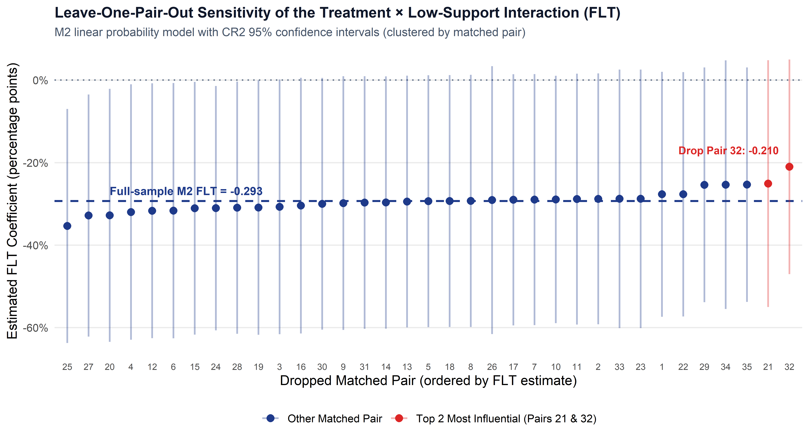

Do Legislators Change Their Votes When They See District Polling?
A replication and matched-pair sensitivity analysis of Butler & Nickerson (2011)
Executive Summary
This project replicates Butler and Nickerson (2011), who conducted a randomized field experiment in the New Mexico House of Representatives to test whether giving legislators district-level public opinion polling changes how they vote on a proposed tax-rebate spending bill (SB-24). Legislators in the control group largely defaulted to voting yes, even when their constituents opposed the proposal. Legislators who received district polling data in low-support districts were substantially more likely to vote no.
Using linear probability models (lm_robust) with CR2 standard errors clustered by matched pair, our replication recovers results closely aligned with the original study’s probit estimates. To test whether the headline finding is driven by a handful of observations in this small sample (\(N = 67\) voting legislators across \(35\) matched pairs), we extend the analysis with two matched-pair sensitivity checks:
- Leave-one-pair-out loop (Approach 1): Dropping one matched pair at a time keeps the treatment × low-support interaction (
FLT) negative in every single iteration (-35.4 to -21.0 percentage points). - Omitting the two most influential pairs together (Approach 2): Removing Pairs
21and32attenuates the controlledFLTinteraction from -29.3 pp (\(p = 0.053\)) to -16.1 pp (\(p = 0.202\)), showing that while the sign stays negative, the magnitude and statistical precision of the controlled interaction are sensitive to these two pairs.
Full-Sample Interaction (M2 FLT)
-29.3 pp
SE = 0.1453, p = 0.053 (N = 67, 35 pairs)
Low-Support Treatment Effect
-31.2 pp
Treatment + FLT in low-support districts
Leave-One-Pair-Out Range
-35.4 to -21.0 pp
Negative across all 35 matched-pair omissions
Drop Top 2 Pairs (21 & 32)
-16.1 pp
SE = 0.1230, p = 0.202 (N = 63, 33 pairs)
Key Sensitivity Finding: Leave-One-Pair-Out Plot
Note: Each point plots the estimated FLT interaction coefficient from Model 2 (sb24 ~ treatment + flt + low_support + rep + dem_pres_2party) after omitting one matched pair, with CR2 95% confidence intervals clustered by match_category. Omitting Pair 32 alone yields the largest upward shift, moving FLT from −29.3 pp to −21.0 pp (\(p = 0.109\)).
Experimental Design & Data
Butler and Nickerson studied \(70\) New Mexico House legislators organized into \(35\) matched pairs (match_category 1–35) based on party affiliation, re-election timing, and 2004 election vote share prior to the vote on SB-24. Within each pair, one legislator was randomly assigned to treatment (treatment = 1) and the other to control (treatment = 0):
- Treatment: On Friday, August 15, 2008, treated legislators received a physical letter on Yale University letterhead reporting district-level polling results from a \(10,690\)-respondent statewide survey, backed up by an email with identical content.
- Outcome (
sb24): Roll-call vote on SB-24 (1= voted yes,0= voted no). Three legislators in the dataset (match_category1,10, and22, all control-group members) were excused or have missing votes, leaving \(N = 67\) observed votes across \(35\) clusters. - Low-Support Moderator (
low_support): Indicator equal to1if district support (q2full) was at or below the sample median, and0otherwise. - Interaction Term (
flt = treatment * low_support): Measures how the estimated treatment effect differs between low-support and high-support districts. In the regression model:treatmentestimates the treatment effect in high-support districts (low_support = 0).fltestimates the difference in treatment effect between low- and high-support districts.treatment + fltgives the total estimated treatment effect in low-support districts.
| Variable | N | Mean | SD | Min | Max |
|---|---|---|---|---|---|
| Voted Yes on SB-24 (sb24) | 67 | 0.7612 | 0.4296 | 0.0000 | 1.0000 |
| Treatment Assigned (treatment) | 70 | 0.5000 | 0.5036 | 0.0000 | 1.0000 |
| Low-Support District (low_support) | 70 | 0.5000 | 0.5036 | 0.0000 | 1.0000 |
| Interaction: Treatment x Low Support (flt) | 70 | 0.2571 | 0.4402 | 0.0000 | 1.0000 |
| Republican Legislator (rep) | 70 | 0.4000 | 0.4934 | 0.0000 | 1.0000 |
| District Dem. Presidential Vote Share | 70 | 0.4970 | 0.1533 | 0.1595 | 0.7985 |
Replication Regression Results
We estimate two linear probability models (OLS with CR2 matched-pair cluster-robust standard errors):
- Model 1 (
M1, no controls):sb24 ~ treatment + flt + low_support - Model 2 (
M2, with controls):sb24 ~ treatment + flt + low_support + rep + dem_pres_2party
| Variable / Statistic | M1 (No Controls) | M2 (With Controls) |
|---|---|---|
| Treatment (High-Support Baseline) | 0.04575 (SE 0.10996, p = 0.6817) | -0.01865 (SE 0.08262, p = 0.8237) |
| Low-Support District | 0.15079 (SE 0.12357, p = 0.2325) | 0.20535 (SE 0.12109, p = 0.1023) |
| Treatment × Low Support (FLT) | -0.41877** (SE 0.16777, p = 0.0179) | -0.29334* (SE 0.14530, p = 0.0529) |
| Republican Legislator (rep) | — | -0.42003*** (SE 0.13677, p = 0.0066) |
| 2004 Dem. Presidential Vote Share | — | 0.45068 (SE 0.31978, p = 0.1751) |
| Intercept | 0.77778*** (SE 0.10083, p = 0.0000) | 0.69809*** (SE 0.20835, p = 0.0038) |
| Observations (N) | 67 | 67 |
| Matched-Pair Clusters | 35 | 35 |
| Adjusted R² | 0.0577 | 0.4004 |
| Model F-Test p-value | 0.02732 | 8.303e-05 |
Interpreting the Baseline vs. Controlled Estimates
- Minimal effect in high-support districts: In
M2, thetreatmentcoefficient is-0.01865(SE0.08262, \(p = 0.824\)), indicating essentially no change in voting behavior when treated legislators already represented high-support districts. - Large negative shift in low-support districts: The interaction
fltis-0.41877(\(p = 0.018\)) inM1and-0.29334(\(p = 0.053\)) inM2. Combiningtreatment + fltinM2implies an estimated-31.2 percentage-pointdrop in the probability of voting yes on SB-24 when a legislator in a low-support district is shown district polling. - Why controls matter: Adding legislator party (
rep = -0.42003, \(p = 0.007\)) and district 2004 Democratic presidential vote share (dem_pres_2party = 0.45068) substantially increases explanatory power (Adjusted \(R^2\) rises from0.0577to0.4004) and reduces the magnitude offltby roughly 12.5 percentage points compared to the uncontrolled specification.
Matched-Pair Sensitivity Analysis
Because the experiment relies on \(67\) observed votes across \(35\) matched pairs, a small number of pairs could exert heavy leverage on the interaction estimate.
Approach 1: Iterative Leave-One-Pair-Out Check
Across all \(35\) iterations omitting one match_category pair from M2:
- Every estimate remains negative, ranging from
-0.354(when dropping Pair25, \(p = 0.016\)) to-0.210(when dropping Pair32, \(p = 0.109\)). - The median leave-one-out
FLTcoefficient is -0.2935, nearly identical to the full-sampleM2estimate of-0.29334. - Pairs
32and21produce the two largest upward shifts (weakening the negative interaction the most when omitted).
| Direction | Dropped Pair | N | Clusters | FLT Estimate | CR2 SE | p-value |
|---|---|---|---|---|---|---|
| Weakens FLT most (least negative) | 32 | 65 | 34 | -0.21028 | 0.12675 | 0.1088 |
| Weakens FLT most (least negative) | 21 | 65 | 34 | -0.25101 | 0.14598 | 0.0968 |
| Weakens FLT most (least negative) | 35 | 65 | 34 | -0.25355 | 0.13891 | 0.0783 |
| Weakens FLT most (least negative) | 34 | 65 | 34 | -0.25357 | 0.14686 | 0.0956 |
| Weakens FLT most (least negative) | 29 | 65 | 34 | -0.25391 | 0.13911 | 0.0783 |
| Strengthens FLT most (most negative) | 25 | 65 | 34 | -0.35361 | 0.13872 | 0.0164 |
| Strengthens FLT most (most negative) | 27 | 65 | 34 | -0.32842 | 0.14305 | 0.0296 |
| Strengthens FLT most (most negative) | 20 | 65 | 34 | -0.32793 | 0.14953 | 0.0369 |
| Strengthens FLT most (most negative) | 4 | 65 | 34 | -0.31992 | 0.15099 | 0.0433 |
| Strengthens FLT most (most negative) | 12 | 65 | 34 | -0.31691 | 0.15072 | 0.0447 |
Approach 2: Dropping Pairs 21 and 32 Together
Next, we re-estimate both M1 and M2 after simultaneously excluding the two most influential pairs (match_category 21 and 32), leaving \(N = 63\) observations across \(33\) matched-pair clusters.
| Variable / Statistic | M1 (Drop Pairs 21 & 32) | M2 (Drop Pairs 21 & 32) |
|---|---|---|
| Treatment (High-Support Baseline) | 0.03472 (SE 0.11218, p = 0.7602) | -0.07048 (SE 0.06769, p = 0.3112) |
| Low-Support District | 0.13889 (SE 0.13081, p = 0.2990) | 0.19148 (SE 0.13167, p = 0.1604) |
| Treatment × Low Support (FLT) | -0.36315** (SE 0.16985, p = 0.0411) | -0.16119 (SE 0.12295, p = 0.2017) |
| Republican Legislator (rep) | — | -0.51306*** (SE 0.12915, p = 0.0010) |
| 2004 Dem. Presidential Vote Share | — | 0.43858 (SE 0.31859, p = 0.1863) |
| Intercept | 0.77778*** (SE 0.10083, p = 0.0000) | 0.74080*** (SE 0.20451, p = 0.0023) |
| Observations (N) | 63 | 63 |
| Matched-Pair Clusters | 33 | 33 |
| Adjusted R² | 0.0269 | 0.4869 |
| Model F-Test p-value | 0.06818 | 5.941e-06 |
- In
M1(no controls),fltmoves modestly from-0.41877to-0.36315(\(p = 0.041\)), remaining statistically significant at the 5% level. - In
M2(with controls),fltattenuates from-0.29334(\(p = 0.053\)) to-0.16119(\(p = 0.202\)), whiletreatmentshifts from-0.01865to-0.07048.
This demonstrates an important nuance for interpreting small-\(N\) field experiments: the directional conclusion (polling reduces yes votes in low-support districts) holds across every single-pair deletion and even under joint deletion of the two most influential pairs, but the statistical significance and magnitude of the controlled interaction rely noticeably on Pairs 21 and 32.
Limitations & Methodological Notes
- Sample size and statistical power: Dropping two pairs removes 4 of 70 legislators (leaving \(N = 63\) observed votes). Removing the two pairs most supportive of the hypothesis naturally reduces precision and does not prove a null effect, but it highlights how sensitive small-sample interaction estimates can be.
- External validity: The experiment tested one straightforward fiscal bill (tax rebate SB-24) in a single state legislature (New Mexico). Legislators may respond differently on salient, partisan, or socially controversial issues.
- Non-compliance / trustee behavior: Receiving a letter or email does not guarantee a legislator read it or chose to act as a delegate rather than a trustee.
- Reconciliation note vs. original class PDF: All tables, statistics, and plots on this page are rendered dynamically from
Code/replication_analysis.R. Compared to the original class PDF report, this web edition preserves the exact coefficient estimates while correcting minor transcription typos in the PDF tables (specifically: Full M2Clusters = 35instead of45; and the Drop-21-&-32 table title"Drop Pairs 21 and 32"instead of"31 and 52", withN = 63,Clusters = 33, and M2 Adjusted $R^2 = 0.4869`).
References
- Butler, Daniel M., and David W. Nickerson. 2011. “Can Learning Constituency Opinion Affect How Legislators Vote? Results from a Field Experiment.” Quarterly Journal of Political Science 6(1): 55–83. https://doi.org/10.1561/100.00011019
- Butler, Daniel M., and David W. Nickerson. Replication Data, Yale Institution for Social and Policy Studies (ISPS) Data Archive / Yale Dataverse. https://doi.org/10.60600/YU/QVCG0C